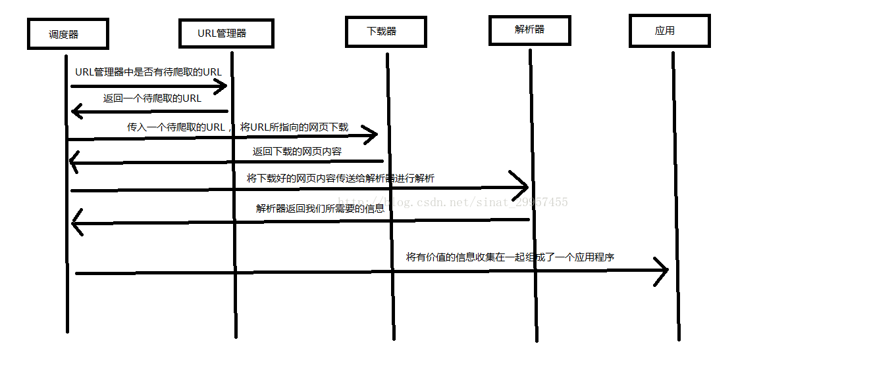

一、クローラーとは
クローラー：インターネットから自動的に情報を取得するプログラムであり、インターネットから私たちにとって価値のある情報を取得します。
二、Pythonクローラーのアーキテクチャ
Pythonクローラーのアーキテクチャは主に5つの部分から構成されており、それぞれスケジューラ、URLマネージャ、ウェブページダウンローダ、ウェブページパーサ、アプリケーション（取得した価値のあるデータ）です。
- スケジューラ：パソコンのCPUに相当し、主にURLマネージャ、ダウンローダ、パーサの間の調整作業を担当します。
- URLマネージャ：取得予定のURLアドレスと取得済みのURLアドレスを含み、URLの重複取得とURLのループ取得を防ぎます。URLマネージャの実装は主に3つの方法があり、メモリ、データベース、キャッシュデータベースを通じて実現します。
- ウェブページダウンローダ：URLアドレスを渡すことでウェブページをダウンロードし、ウェブページを文字列に変換します。ウェブページダウンローダにはurllib2（Python公式の基本モジュール）があり、ログイン、プロキシ、cookieが必要な場合に対応します。また、requests（サードパーティパッケージ）もあります。
- ウェブページパーサ：ウェブページの文字列を解析し、私たちの要求に応じて有用な情報を抽出できます。また、DOMツリーの解析方法に従って解析することもできます。ウェブページパーサには、正規表現（直感的で、ウェブページを文字列に変換し、あいまい一致によって価値のある情報を抽出しますが、ドキュメントが複雑な場合、この方法でデータを抽出するのは非常に困難になります）、html.parser（Python標準）、beautifulsoup（サードパーティプラグインで、Python標準のhtml.parserを使用して解析することも、lxmlを使用して解析することもでき、他の方法と比べて強力です）、lxml（サードパーティプラグインで、xmlとHTMLを解析できます）があります。html.parser、beautifulsoup、lxmlはすべてDOMツリー方式で解析します。
- アプリケーション：ウェブページから抽出した有用なデータで構成されるアプリケーションです。
以下に、スケジューラがどのように調整作業を行うかを図で説明します。

三、urllib2 によるウェブページダウンロードの3つの方法
#!/usr/bin/python
# -*- coding: UTF-8 -*-
import cookielib
import urllib2
url = "http://www.baidu.com"
response1 = urllib2.urlopen(url)
print "最初の方法"
#ステータスコードを取得、200は成功を意味します
print response1.getcode()
#ウェブページコンテンツの長さを取得
print len(response1.read())
print "2番目の方法"
request = urllib2.Request(url)
#Mozillaブラウザをシミュレートしてクロール
request.add_header("user-agent","Mozilla/5.0")
response2 = urllib2.urlopen(request)
print response2.getcode()
print len(response2.read())
print "3番目の方法"
cookie = cookielib.CookieJar()
#urllib2にcookie処理機能を追加
opener = urllib2.build_opener(urllib2.HTTPCookieProcessor(cookie))
urllib2.install_opener(opener)
response3 = urllib2.urlopen(url)
print response3.getcode()
print len(response3.read())
print cookie
四、サードパーティライブラリ Beautiful Soup のインストール
Beautiful Soup：Pythonのサードパーティプラグインで、xmlとHTMLからデータを抽出するために使用します。公式サイトアドレスhttps://www.crummy.com/software/BeautifulSoup/
1、Beautiful Soup のインストール
cmd（コマンドプロンプト）を開き、Python（Python2.7バージョン）のインストールディレクトリにあるscriptsフォルダに入り、dirと入力してpip.exeがあるか確認します。あれば、Python標準のpipコマンドでインストールできます。以下のコマンドを入力してインストールします：
pip install beautifulsoup4
2、インストールが成功したかテスト
Pythonファイルを作成し、次のように入力します：
import bs4 print bs4
そのファイルを実行し、正常に出力されればインストール成功です。
五、Beautiful Soup を使った HTML ファイルの解析
#!/usr/bin/python
# -*- coding: UTF-8 -*-
import re
from bs4 import BeautifulSoup
html_doc = """
<html><head><title>The Dormouse's story</title></head>
<body>
<p class="title"><b>The Dormouse's story</b></p>
<p class="story">Once upon a time there were three little sisters; and their names were
<a href="http://example.com/elsie" class="sister" id="link1">Elsie</a>,
<a href="http://example.com/lacie" class="sister" id="link2">Lacie</a> and
<a href="http://example.com/tillie" class="sister" id="link3">Tillie</a>;
and they lived at the bottom of a well.</p>
<p class="story">...</p>
"""
#BeautifulSoup解析オブジェクトを作成
soup = BeautifulSoup(html_doc,"html.parser",from_encoding="utf-8")
#すべてのリンクを取得
links = soup.find_all('a')
print "すべてのリンク"
for link in links:
print link.name,link['href'],link.get_text()
print "特定のURLアドレスを取得"
link_node = soup.find('a',href="http://example.com/elsie")
print link_node.name,link_node['href'],link_node['class'],link_node.get_text()
print "正規表現マッチング"
link_node = soup.find('a',href=re.compile(r"ti"))
print link_node.name,link_node['href'],link_node['class'],link_node.get_text()
print "P段落のテキストを取得"
p_node = soup.find('p',class_='story')
print p_node.name,p_node['class'],p_node.get_text()
原文アドレス：https://blog.csdn.net/sinat_29957455/article/details/70846427